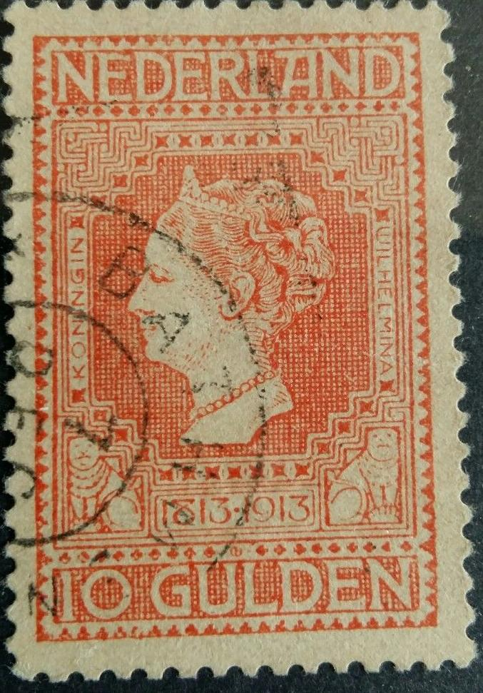
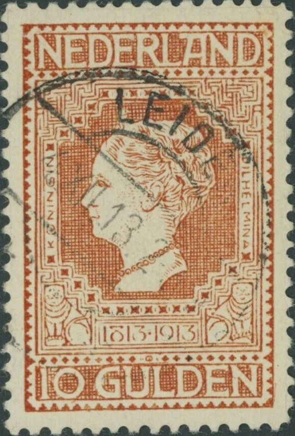
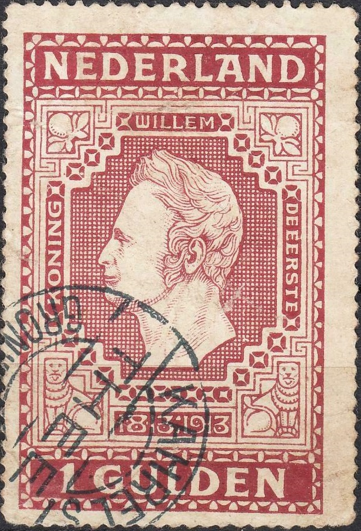
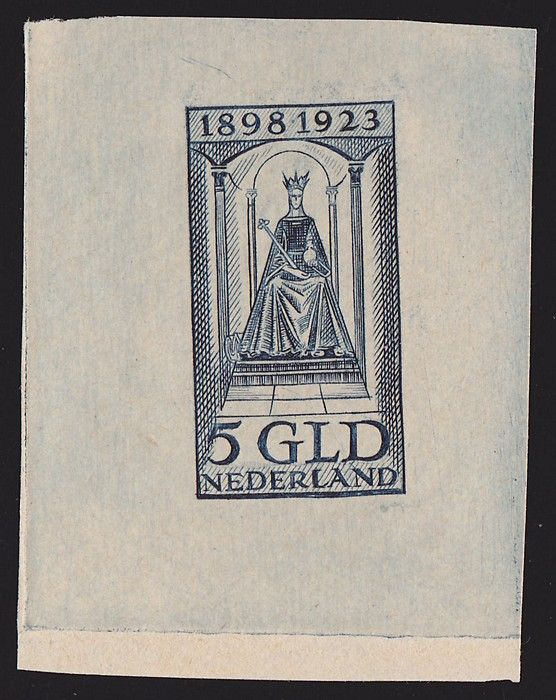
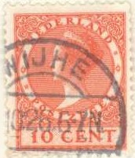
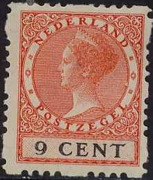
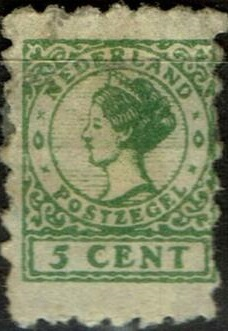
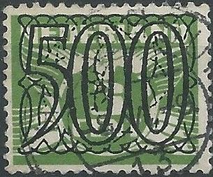
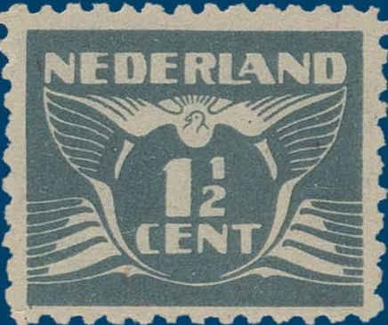

Return To Catalogue - Netherlands 1852-1871 - Netherlands 1872-1897 - Netherlands 1898-1906 - Netherlands 1925 onwards
Note: on my website many of the
pictures can not be seen! They are of course present in the
catalogue;
contact me if you want to purchase it:
For issues of the Netherlands from before 1907, click here.
1/2 c blue 1 c lilac 2 1/2 c red
These stamps are perforated 12 x 12 1/2.
Value of the stamps |
|||
vc = very common c = common * = not so common ** = uncommon |
*** = very uncommon R = rare RR = very rare RRR = extremely rare |
||
| Value | Unused | Used | Remarks |
| 1/2 c | c | c | |
| 1 c | c | c | |
| 2 1/2 c | c | c | |
These stamps were issued for the 300th anniversary of the birthday of de Ruyter. The stamps were only valid for inland letters from 23 March to 31 May 1907, but they exist used after this date. 2 Million stamps were printed, which turned out to be too many and resulted in a large amount of remainders. These were later used as postage due stamps (overprint "PORTZEGEL" and value).

2 1/2 c green 3 c yellow 5 c red 10 c brown 12 1/2 c blue 20 c brown 25 c bleu 50 c green 1 G red 2 1/2 G llac 5 G yellow 10 G red on yellow Surcharged (1920)
'2.50' on 10 G orange
These stamps are perforated 11 1/2 x 11 or 11 1/2. These stamps were valid up to 31 December 1937.
Value of the stamps |
|||
vc = very common c = common * = not so common ** = uncommon |
*** = very uncommon R = rare RR = very rare RRR = extremely rare |
||
| Value | Unused | Used | Remarks |
| 2 1/2 c | c | c | 3.000.000 stamps printed |
| 3 c | c | c | 1.500.000 stamps printed |
| 5 c | c | c | 3.000.000 stamps printed |
| 10 c | c | c | 1.500.000 stamps printed |
| 12 1/2 c | * | * | 1.500.000 stamps printed |
| 20 c | * | * | 500.000 stamps printed |
| 25 c | * | * | 500.000 stamps printed |
| 50 c | ** | ** | 200.000 stamps printed |
| 1 G | ** | ** | 200.000 stamps printed |
| 2 1/2 G | *** | *** | 100.000 stamps printed |
| 5 G | *** | *** | 100.000 stamps printed |
| 10 G | RR | RR | 101.189 stamps printed, 75.650 stamps remainders. These were in 1920 overprinted with '2.50' |
| 2.50 on 10 G | *** | *** | 1920 |
Dangerous forgeries exist of the 10 G value (for example the so-called Paris forgery, which has a break in the lines just besides the left lion design). The 'Paris-forgery' most likely refers to a forgery made by Jean Cividini. The following text was taken from the 'Ierseksche en Thoolsche Courant' of 5 February 1926:
Een nieuwe vervalsing.
Na de vervalsching van bankbiljetten en de valsche aangifte tot
het vervaardigen van Portugeesche bankbiljetten, komen thans
valsche jubileum-zegels aan de beurt.
Een ijverig postzegel-verzamelaar te Parijs die beslag had gelegd
op een Hollandschen jubileumzegel 1813-1913 van tien gulden,
welke voor 250 frs. genoteerd staat in den catalogus, werd
onlangs door een deskundige teleurgesteld, die hem er op attent
maakte, dat de zegel valsch was. na een nauwkeurig onderzoek is
de recherche er in geslaagd den dader op te sporen, die zijn
atelier had in het quartier Lorette, waar nog twee andere
verdachten zijn gearresteerd. De hoofddader is een 25-jarige
jongeman, genaamd Jean Cividini,
die zich bezig hield met het vervalschen van postzegels voor
verzamelingen. Hij breidde zijn "zaken" tot Belgie uit
en nog zeer onlangs had Cividini zich naar Brussel begeven, waar
hij den verzamelaar Gerard aldaar wist te bewegen een hoeveelheid
echte Belgische postzegels, ter waarde van 30 duizend francs, te
ruilen tegen door hem gemaakte valsche zegels.
Tot zijn medeplichtigen behoort de Rus Makarof,
die in het leger van Wrangel heeft gediend en in betrekking was
bij vorst Crouy. Hij woonde in een door dezen afgestane kamer in
de Rue Varenne. Voorts werd gearresteerd als medeplichtige een
zekere Zagorski, wiens vader
correspondent is van verscheidene buitenlandsche bladen. Deze
houdt het er echter voor, dat zijn zoon den ernst van zijn daad
niet geheel beseft.
The above text suggests that Jean Cividini was only 25 years
old in 1926, however, he ordered a forged Goldcoast stamp from
Jean de Sperati in 1909 and I've seen a letter to 'Jean Cividini
Briefmarkenhandlung Paris, 22, Rue Milton 22' from 1913. Thus the
age mentioned there is probably incorrect (or is it a different
person?). In
http://sitemap.dna.fr/articles/200701/28/les-faux-des-pays-bas,culture-et-loisirs,000012850.php,
the name Marakoff (alias Frantz Wolff, or Franz Wolf?) is
mentioned. Cividini and Marakoff obtained 15 and 8 months of
prison sentence. In the 'Bulletin de la ligue anti-Allemande' of
1917 Cividini has an advertisement with 'TIMBRES POSTE POUR
COLLECTIONS JEAN CIVIDINI 52 rue Notre Dame des Victoires Paris,
Achat de collections et correspondances de 1840 a 1880.' In Le
Figaro of 4 February 1926, the name Constantin Makaroff is
mentioned. And in the same journal of 31 January 1926, the name
'Jean-Georges Cividini' born 18 June 1901 is mentioned, living in
3 Rue Clauzel. It is also mentioned that Marakoff (Frantz Wolff)
and Zagorski (under the false name Saint-Armand) were operating
from Metz and Switzerland earlier to get philatelists to send
money in return for rare stamps. They kept the money and never
send those stamps.



A Paris forgery with a "BATHMEN 7 DEC" cancel (a small
village in the Netherlands). The lines just to the right of the
left lion's face have a break.

Very suspicious stamp with smaller lettering, see for example the
word "WILHELMINA". Also printed more blurly than the
genuine stamp. This could be a genuine lower valued stamp with
the design chemically removed and the 10 G design printed on it.
Other 'facsimiles':
Facsimile of the 10 G stamp, inscription on the back reads 'Deze
postzegel is ter gelegenheid van het 4-jarig bestaan speciaal
gedrukt voor postzegelhandel W.v.d.Bijl Servetstraat 2, Utrecht'
to commemorate the 4 year existence of a stamp shop in Utrecht in
1979. These facsimiles exist with the text on the back removed,
see:
http://www.stampculture.com/1913-jubilee-issue-10-guilder-advertising-print-from-1979/
and/or pasted on letters with forged postmarks. The perforation
of the genuine stamp is 11 1/2, while the that of the facsimle is
10 1/2.

Another 'V.d. Bijl' facsimile

Some 'facsimiles' made in 1983. The perforation is printed as
well and the 'space' next to the perforation is red as well!
Some large sized (1 1/2 times the original design) stamps exist, printed in rows of 12 (one of each value). They apparently were made for advertising purposes (there are advertising texts outside the design, for example "H&T.KINGMA MEPPEL"). More can be found in the book of P.v.d.Loo on forgeries or http://www.po-en-po.nl/vraagbaak_archief_9.html:

Large sized stamps, with "KAHREL'S THEE GRONINGEN" and
"N.V.STEENDRUKKERIJ VAN DE VEN S'GRAVENHAGE"
inscription, both with "LITH. VAN DE VEN DEN HAAG"
inscription at the bottom. Also a 1 G with 'normal' inscription,
also 1 1/2 times the size of a normal stamp and with cancel
"KAHREL'S THEE GRONINGEN". They also exist with printed
advertisement text all around the design.
1 c blue 2 c orange 2 1/2 c green 4 c blue
Value of the stamps |
|||
vc = very common c = common * = not so common ** = uncommon |
*** = very uncommon R = rare RR = very rare RRR = extremely rare |
||
| Value | Unused | Used | Remarks |
| 1 c | c | c | |
| 2 c | * | vc | |
| 2 1/2 c | * | c | |
| 4 c | * | c | |
I've seen a cut from an envelope in the design of the 2 c orange (same value).
(1923 Jubilee issue, no indication of country name, which was
required by the UPU, but omitted here)

5 c green, Queen sitting on throne
2 c green 5 c green (large size) 7 1/2 c red 10 c red 20 c blue 25 c yellow 35 c orange 50 c black 1 G red (large size) 2 1/2 G brown (large size) 5 G blue (large size)
Forgeries exist of the 2 1/2 G and 5 G values.

Two imperforate forgeries.

2 c (+5 c) blue 10 c (+5 c) red
Forgeries of these stamps exist.


5 c green 6 c brown 7 1/2 c red 7 1/2 c violet 9 c red and black (value in black) 10 c red 10 c violet 12 1/2 c red 12 1/2 c blue 15 c blue 15 c yellow 20 c blue 21 c olive (1 September 1931) 22 1/2 c olive 22 1/2 c red 25 c green 27 1/2 c grey 30 c violet 35 c olive 40 c brown 50 c green 60 c violet 60 c black (1929) Surcharged
'21' (red) on 22 1/2 c olive (11 November 1929)
For a stamp exhibtion in 1924 were issued (all R):
Stamp exhibition issue in the Hague, 6 to 17 September 1924.
10 c green 15 c grey 35 c red Larger size (1926-27)


1 G blue 2 1/2 G red 5 G grey

Some of these stamps exist with special perforation used in stamp
roles (so-called syncopated perforation, to prevent tearing off
of the stamps in the distributing machines). Even different types
of perforation exist (at all four sides, at bottom/top only in
three places and at the bottom/top corners only). The special
perforations are rarer than the normal perforated stamps.
The values 7 1/2 c red, 12 1/2 c blue, 15 c orange and 30 c were overprinted with "COUR PER MANENTE DE JUSTICE INTERNATIONALE" in gold colour in 1934.
Postal stationary "4" on 5 c green and 5 c green. I've
also seen 7 1/2 c red.

A 'toy stamp' in a similar design.
2 c brown (waves) 10 c brown on yellow (ship, different design)
2 c (+2 c) green 7 1/2 c (+3 1/2 c) brown 10 c (+2 1/2 c) red
These stamps appeared on 15 December 1924.
(Dove design, issued from September 1924 onwards)
In the dove design were issued: 1/2 c grey 1 c red 1 1/2 c lilac 1 1/2 c grey (1935) 2 c orange 2 1/2 c green 3 c green 4 c blue Some of these stamps also exist with special perforation:

1 1/2 c lilac with special perforation at the four sides. Another
special perforation only at the left and right hand side also
exists (the 2 c at the right hand side).
New values were issued in 1941: 2 1/2 c green 5 c green 7 1/2 c red 10 c violet 12 1/2 c blue 15 c blue 17 1/2 c orange 20 c violet 22 1/2 c green 25 c red 30 c olive 40 c green 50 c brown. The 2 1/2 c and 7 1/2 c also exist printed side by side. With 'guilloche' overprint (1940) on 3 c stamp, 'tralie' in Dutch


Dove design with guilloche overprint. Most of the overprint is in
deep black, while some of the inner overprint design was done in
more greyish black. These stamps were issued to replace the
stamps with Queen Wilhelmina during World War II.
2 1/2 c red 5 c green 7 1/2 c red 10 c green 12 1/2 c blue (overprint in blue) 17 1/2 c green 20 c green 22 1/2 c green 25 c green 30 c green 40 c green 50 c green 60 c green 70 c green 80 c green 100 c green 250 c green 500 c green The 2 1/2 c and 7 1/2 c also exist printed side by side.
The values 1 1/2 c lilac and 2 1/2 c green were overprinted with "COUR PER MANENTE DE JUSTICE INTERNATIONALE" in gold colour in 1934.
Postal stationary in the same design with
"NOODUITGIFTE" at the bottom (emergency issue).
Genuine overprints are done in two different shades of black. Forgeries exist of the higher values (80 c, 100 c, 250 c and 500 c, even printed together in blocks of four); they are printed on 3 c genuine stamps from 1926 (which has a slightly different shade of green). The 500 c even exists in 4 different kinds of forgeries. They often have dates before 1940.

Forgery of the 500 c stamp, the overprint is rather crude. In my
opinion this is forgery III of the van de Loo book.

Looks like another forgery to me.

British espionage forgery issued during World War II


{kind=link}
{kind=link}
{kind=link}
{kind=link}
{kind=link}
{kind=link}
{kind=link}
{kind=link}